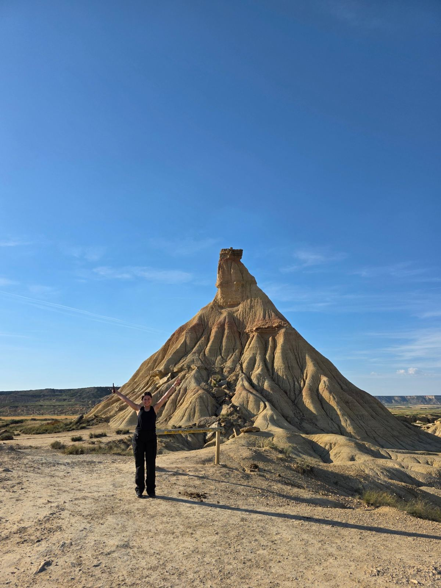
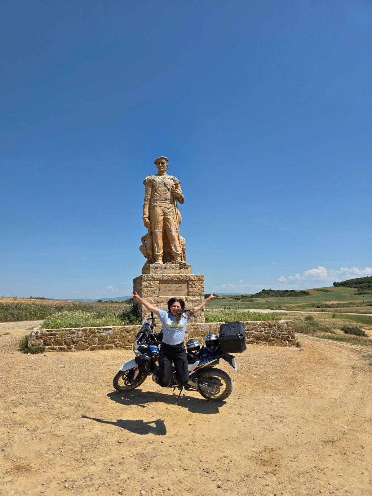
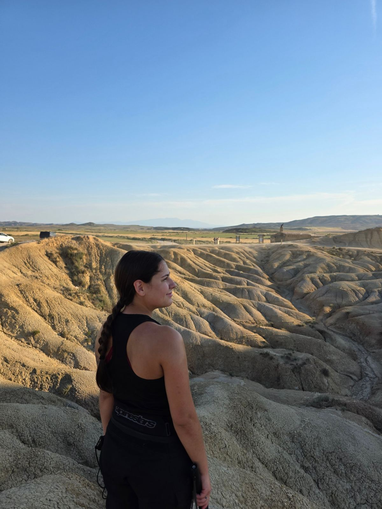
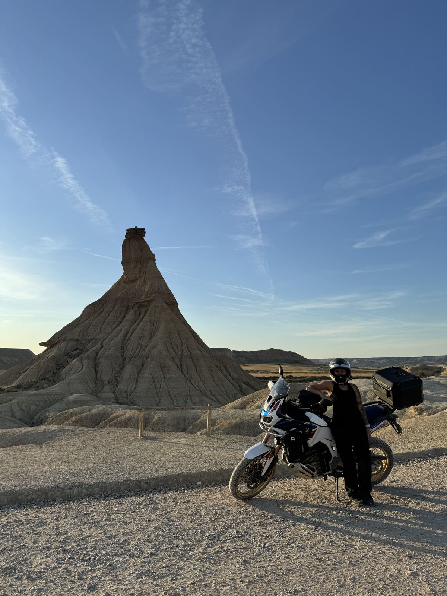
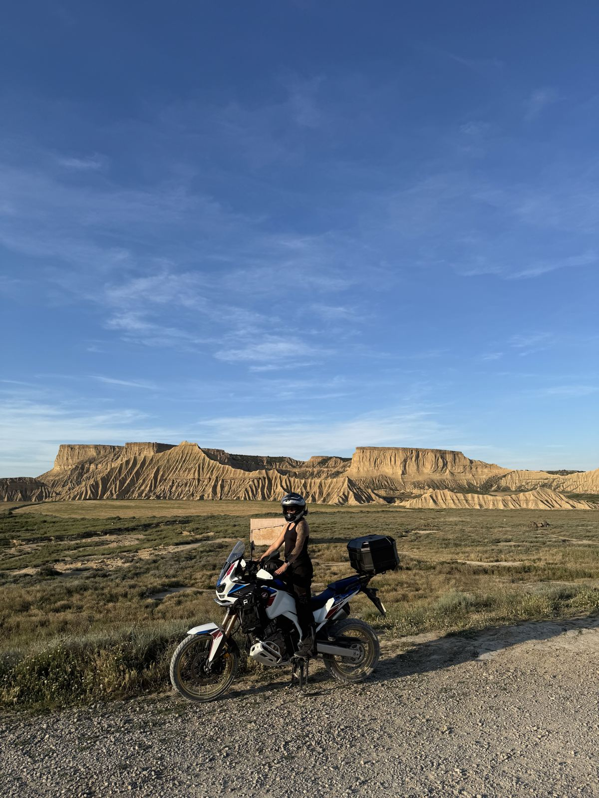
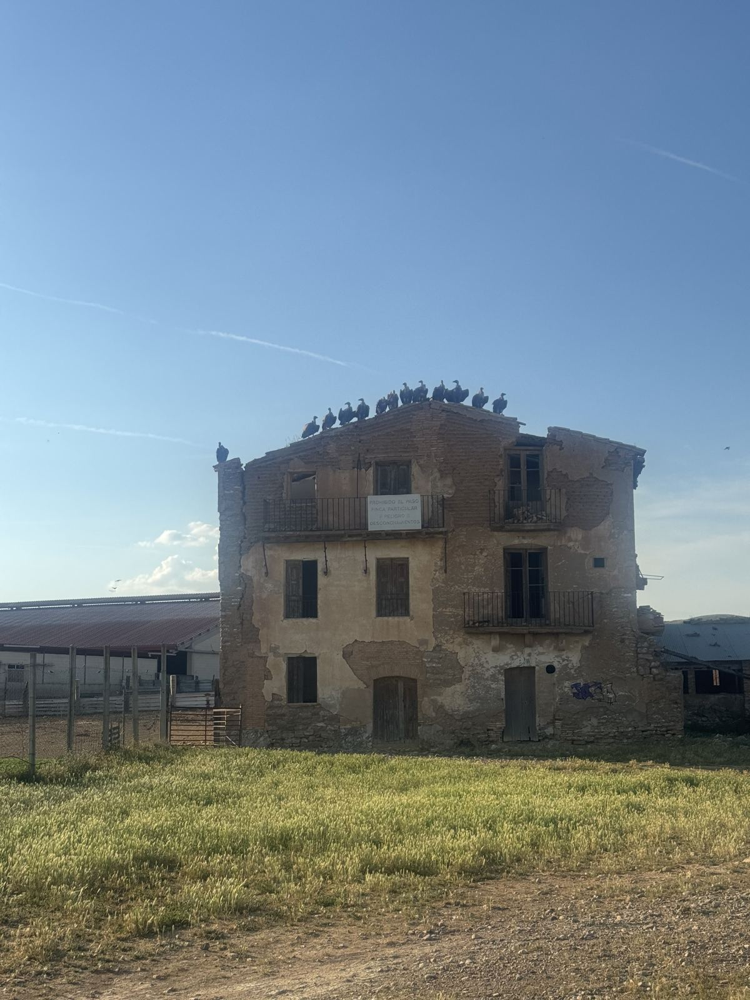
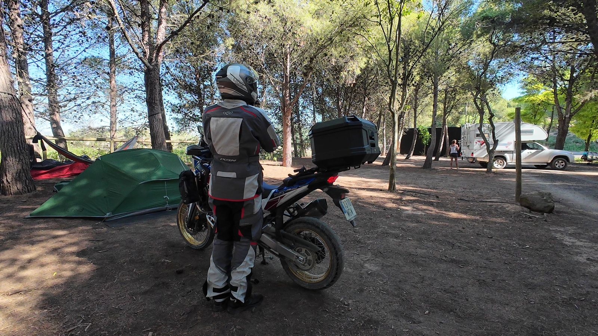
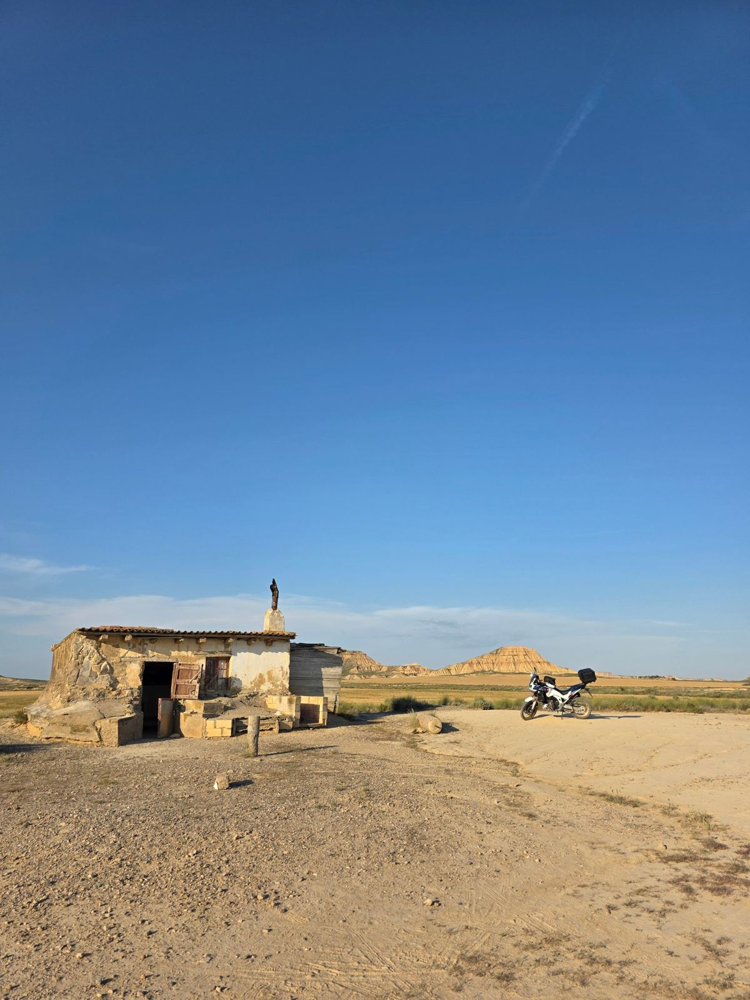
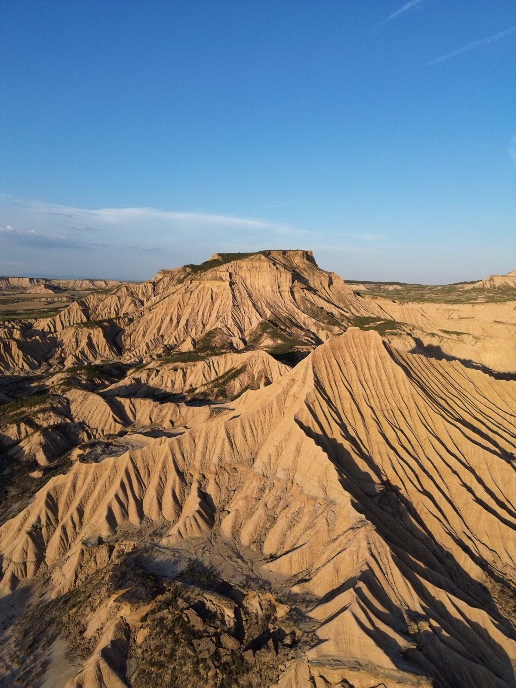
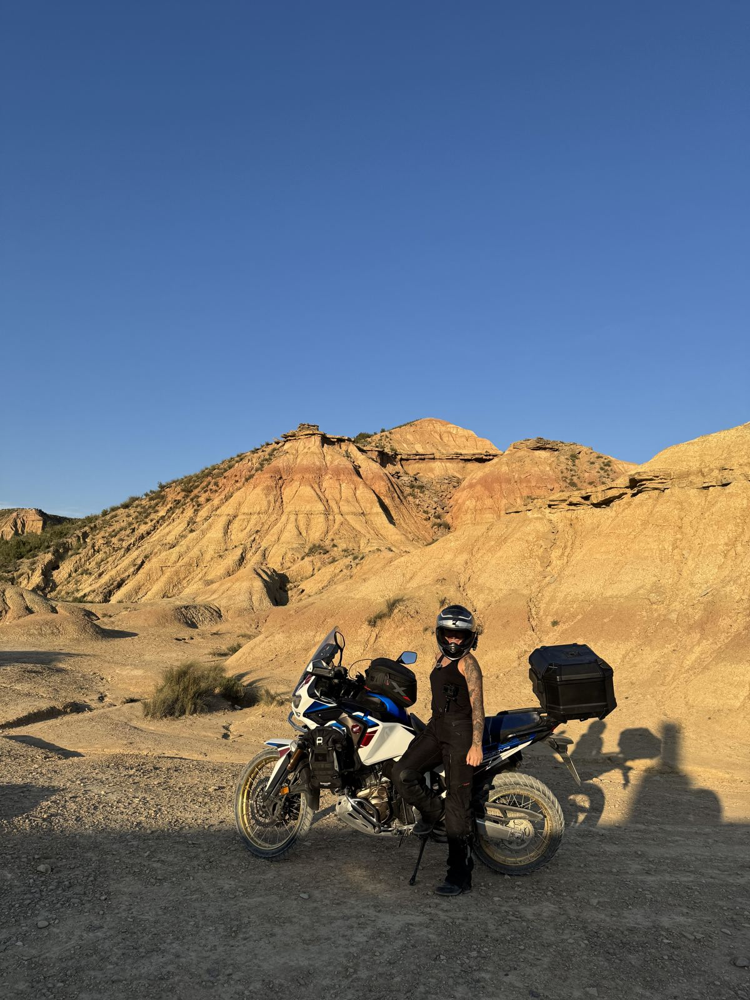

Decidimos tudo em cima da hora (como sempre ), subimos na Africa Twin e saímos de Barcelona direto pras Bardenas, sem parar no caminho. O único camping com vaga era um bem simples, mas com muita sombra, e isso salvou a gente.
O calor de maio pegou a gente de surpresa: no primeiro dia tentamos rodar com o sol forte do meio do dia e não deu. Voltamos pro camping e só entramos no parque de novo quando o sol baixou. E valeu muito a pena: pistas de cascalho tranquilas, paisagem de outro planeta e o Castildetierra ficando dourado no fim da tarde.
Por que ir
As Bardenas Reales são um parque natural no sul de Navarra com cara de outro planeta: cânions, cabeços isolados e terra cor de areia a perder de vista. O parque tem uma rede de pistas de terra liberadas pra veículos a motor, e é isso que faz dele um destino perfeito pra moto.
A gente foi com um objetivo só: rodar pelas Bardenas e se perder pelos caminhos. Nada de roteiro turístico com mil paradas.






Como chegar
Saímos de Barcelona e fomos direto, sem paradas no caminho. São cerca de 380 km (perto de 4 horas), passando por Zaragoza. A entrada principal do parque fica na estrada NA-134, entre Tudela e Arguedas. É ali que está o Centro de Informação.
O nosso esquema de sempre quando vamos de camping: chega, monta o acampamento e só depois vai ao supermercado.
Onde dormimos: Camping Nature
Como a gente decide tudo em cima da hora, o único camping com vaga era o Camping Nature, em Cascante, a uns 20 minutos de moto da área do parque.
- Simples, sem luxo: parcelas amplas, mas bem juntinhas umas das outras.
- Fica na beira da rodovia. Dá pro gasto: pra cozinhar e ficar na sombra.
- Muito arborizado. Com o calor que fez, isso salvou a gente.
- Pagamos 40 € por duas noites.

Endereço: Ctra. NA-121-C, km 2,4, Cascante (Navarra).
Como é rodar de moto lá dentro
Quando você passa pelo Centro de Informação, eles te dão um mapa com todas as pistas. Tem pista só pra veículo a motor e pista só pra bicicleta, então presta atenção pra não entrar onde não pode.
A volta principal (a rota circular, a mais conhecida, que contorna o polígono de tiro militar) tem uns 25 km de off-road, e dali saem várias outras pistas pra ir se enfiando pelo parque.

"Mesmo com pedra e cascalho, é tranquilo de fazer."
O terreno é de terra e cascalho, mas é simples. Se sua moto não é 100% off-road, dá pra fazer indo devagar e com cuidado. A gente viu várias motos de estrada e touring rodando lá, mas a maioria era trail e enduro.
Cuidado com os bichos
É área de javali, lebre e raposa. Eles cruzam a pista do nada, então roda com atenção, principalmente no fim da tarde.
O calor (sério, leva isso em conta)
Fomos em maio e já estava insuportável
Um calor abafado como a gente nunca tinha sentido, daqueles que nem dá pra respirar direito. No primeiro dia entramos de dia pra ver como era e não aguentamos. Voltamos pro camping, ficamos na sombra das árvores durante as horas de sol forte e só voltamos pro parque quando o sol estava mais baixo.
Dentro do parque não tem nenhum lugar pra comprar água e não tem uma mísera sombra. Leve tudo o que for precisar antes de entrar.
Se for planejar no verão, prepare-se: é muito pior.
Regras principais
- Horário: das 8h até uma hora antes do anoitecer.
- Velocidade máxima: 40 km/h.
- Só pelas pistas sinalizadas pra veículos.
- Zona militar (polígono de tiro): proibida.
O resto está no regulamento completo.


E o pôr do sol?
No folheto que eles entregam na entrada, a regra é clara: é preciso sair do parque uma hora antes de anoitecer. O que a gente não sabe é como esse controle é feito na prática, ou se é feito. Até o momento dessa viagem (maio de 2026), não tinha cancela nem controle de entrada e saída, e não ficou claro se a regra é fiscalizada mesmo ou se serve mais pra evitar aglomeração no fim do dia.
Na nossa experiência, vimos várias pessoas lá depois do pôr do sol e até cruzamos com a guarda florestal, que não falou nada com ninguém.
E é justamente no fim da tarde que as Bardenas ficam mais lindas, amarelinhas e douradas. Mas a regra existe e a multa pode vir, então a decisão é sua. O jeito seguro de pegar a luz bonita é entrar no fim da tarde e sair dentro do horário.
Mapa
A rota circular que a gente fez: uns 25 km de terra, começando e terminando no Castildetierra e contornando a zona militar.
Rota "Descubriendo la Bardena Blanca desde el Castildetierra", publicada por moncayoracing no Wikiloc.